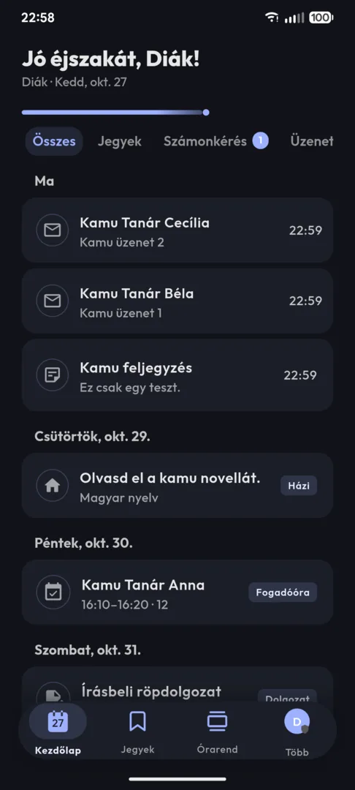
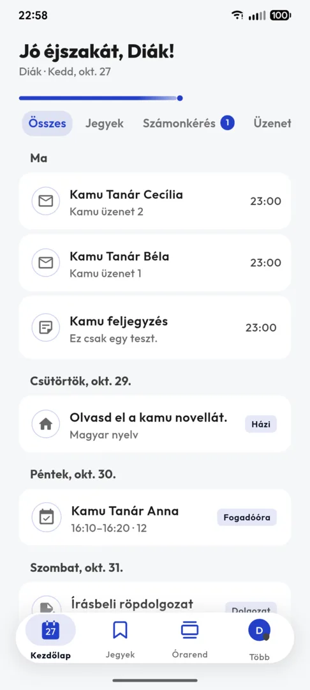
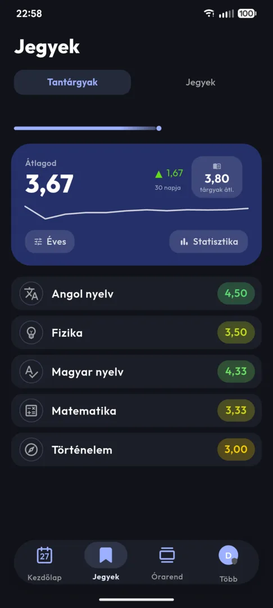
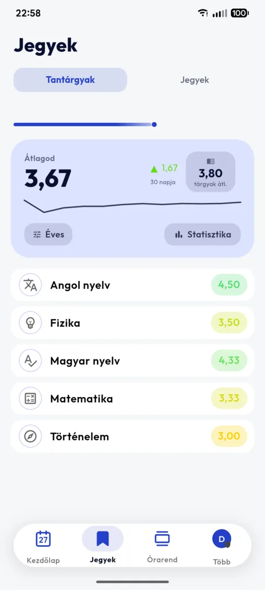
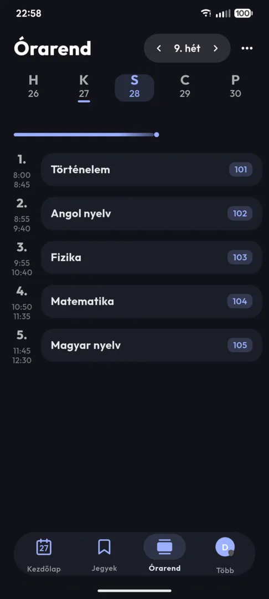
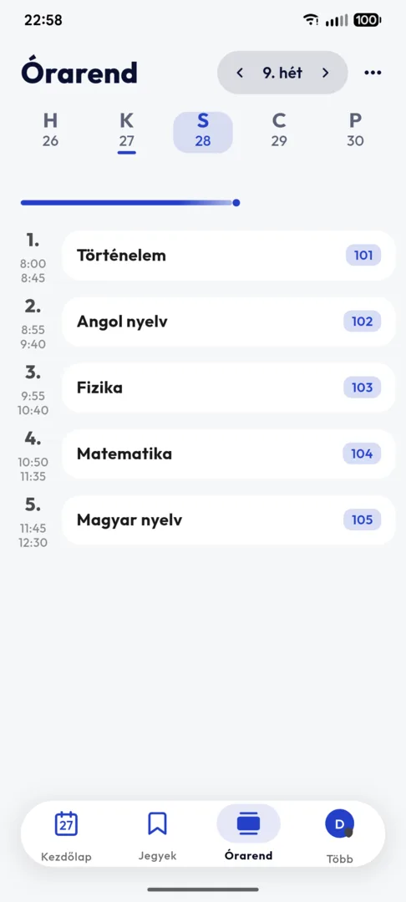
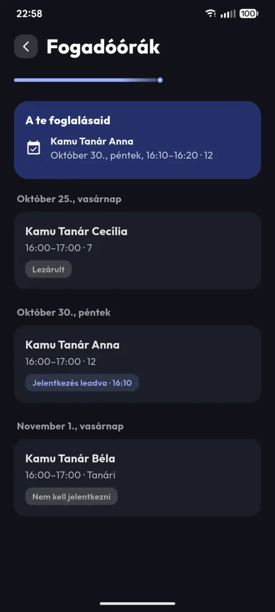
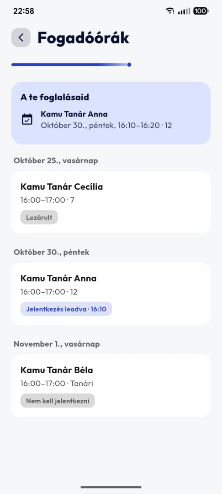
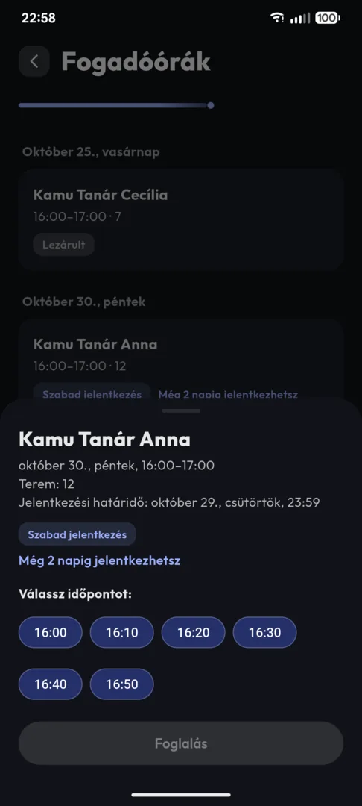
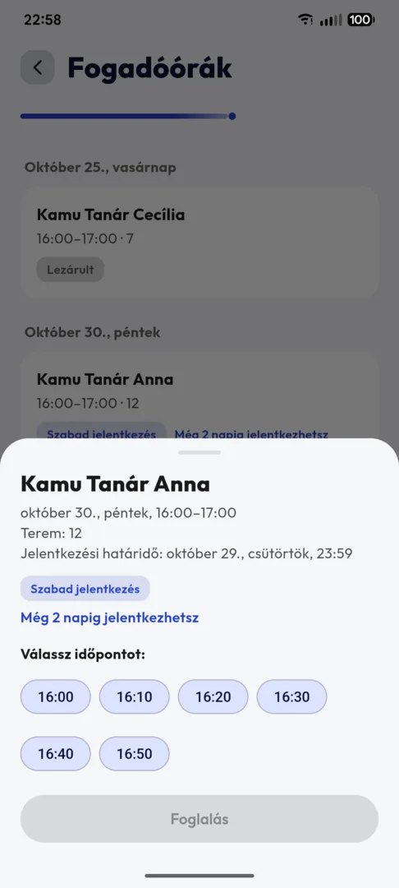

Az e-naplód,
ahogy szeretnéd.
Jegyek, órarend, házi feladatok és üzenetek egy appban, amit szívesen nyitsz meg. Akkor is, ha épp egyes jött. Diákoknak és szülőknek.
Letöltés Androidra Letöltés iPhone-ra
Ingyenes, reklámmentes, nyílt forráskódú. Nem hivatalos app, de a meglévő KRÉTA-fiókoddal működik.


Így néz ki.
Valódi képernyőképek. A diák kitalált, a jegyei is, úgyhogy senkit nem buktattam le.
Kezdőlap: minden új egy helyen 

Jegyek: átlag, alakulás, tárgyak 

Órarend: időpont és terem 

Fogadóórák: foglalás pár koppintással
Minden ott van, ahol keresed.
Ugyanazok az adatok, mint a hivatalos KRÉTA-appban, csak nem kell vadásznod rájuk, és nem kell háromszor újraindítanod, hogy betöltsön. Egy pillantás, és tudod, mi a helyzet.
Válassz témát
Nyugodt, letisztult felület. Témát is választhatsz: Kobalt, Fekete-sárga, Petrol, Üveg vagy Androidon a telefonod saját színei, sötét és világos változatban is.
Net nélkül is megy
Gyorsan indul, és a legutóbbi adataidat akkor is mutatja, ha épp nincs net. Vagy ha épp a KRÉTA nincs. 2026 szeptemberében például napokig akadozott. A buszon is megnézheted, hányadik órád következik.
Szól, ha kell
Értesít, ha új jegyet kaptál, vagy ha elmarad egy óra (iPhone-on néha kis késéssel). Az utóbbinak általában jobban örülsz.
Az adataid nálad maradnak
A jegyeid csak a telefonod és a KRÉTA között utaznak. Nincs reklám, nincs követés, nincs statisztika. Én sem tudom, hányas lett a dolgozatod. A KRÉTA fejlesztőjét 2024-ben 110 millió forintra bírságolta az adatvédelmi hatóság egy hekkertámadás miatt. Tőlem nincs mit ellopni, mert nincs szerverem.
Ugyanaz az app, szülői fiókkal.
Szülőként is a hivatalos KRÉTA-oldalon lépsz be. A Tinta magától rájön, hogy szülő vagy. Semmit nem kell beállítanod.
- Igazolás beküldése Hiányzás igazolása az appból, akár orvosi papír fotójával. Látod a döntést is.
- Fogadóóra-foglalás Válassz időpontot, és tedd be a naptáradba. Reggel emlékeztet is.
- Üzenet a tanároknak Írj az osztályfőnöknek vagy bármelyik tanárnak. A válaszokat is ugyanott látod.
- Több gyerek, egy app Minden gyereknek külön fiókja van, egy koppintással válthatsz köztük.


Így teheted fel. Ingyenes
Az appboltokban még nincs fent, ezért a GitHubról töltheted le. Regisztrálni sem kell.
Android
- Nyisd meg a letöltési oldalt a telefonodon.
- Töltsd le ezt: tinta-…-arm64-v8a.apk (a legtöbb mai telefonra ez kell). Régebbi telefonra az armeabi-v7a változat kell.
- Nyisd meg a letöltött fájlt, és engedélyezd a telepítést, ha a telefon rákérdez.
Ha új verzió jön ki, az app szól, és pár koppintással frissítheted.
iPhone
- iPhone-ra az AltStore nevű ingyenes programmal tudod feltenni, egy számítógép segítségével.
- Az útmutató lépésről lépésre végigvezet, képekkel és hibaelhárítással.
- Fontos: ingyenes Apple ID-vel az appot hetente újra kell hitelesíteni. Ha a gépen fut az AltServer, és a telefon ugyanarra a wifire csatlakozik, ezt magától elintézi.
Gyakori kérdések
Ez a hivatalos KRÉTA-app?
Nem. A Tinta független, nem hivatalos alkalmazás. Ugyanonnan tölti le az adataidat, ahonnan a hivatalos KRÉTA-app is. Nem áll kapcsolatban a KRÉTA üzemeltetőjével (EduDev Zrt., korábban eKRÉTA Informatikai Zrt.), és az nem is támogatja.
Biztonságos? Látja valaki a jelszavam?
A belépéshez a Tinta az appon belül megnyitja a KRÉTA hivatalos bejelentkezési oldalát (idp.e-kreta.hu), ott adod meg a jelszavad. A Tinta nem kéri el, nem menti el és sehova nem küldi tovább, ezt a nyilvános forráskódban bárki ellenőrizheti. Az adataid titkosítva, csak a telefonod és a KRÉTA szerverei között utaznak. Nincs köztes szerver, és nem figyelem, mit csinálsz az appban.
Miért nincs a Google Play Áruházban?
Mert ott nem élne sokáig. 2020 decemberében az eKRÉTA kérésére a Google egy csapásra levette a Play Áruházból a Filc Naplót, az Arisztokrétát és még két másik KRÉTA-klienst (Napló+, K-Napló), összesen nagyjából 20 000 aktív telepítéssel (a Filc csapatának beszámolója). 2021 szeptemberében a Filc még egyszer felkerült a Playre, és 11 napot élt. Később a reFilc is eltűnt onnan, a Szivacsot pedig már korábban technikai úton ellehetetlenítették. Nem szeretném, ha a Tinta is erre a sorsra jutna, úgyhogy marad a közvetlen letöltés. Bónusz: így az újítások is gyorsabban jönnek. A fájlt a saját kulcsommal írom alá, így a telepített Tintát csak az én frissítéseim írhatják felül. Ezért mindig innen vagy a GitHubról töltsd le, máshonnan ne.
Hogyan frissül?
Androidon a Tinta minden indításkor megnézi a GitHubon, van-e új verzió, és ha van, szól. Egy koppintással letöltöd, a telepítést pedig a telefonod kéri jóváhagyni. Az adataid és a beállításaid megmaradnak. Ha az Obtainiumot használod, add hozzá ezt a címet: github.com/Pacuka/tinta, és onnantól az is figyeli a frissítéseket.
Honnan tudom, hogy a fájl tényleg tőled van?
Minden Tinta APK-t ugyanazzal a kulccsal írok alá. A tanúsítvány SHA-256-ujjlenyomata: AA:48:66:1E:28:55:5B:22:FA:D6:FB:FD:B6:C0:C6:79:68:62:9B:FA:9F:5C:FD:12:1D:48:7E:22:13:7F:F7:AA Az Android magától is visszautasítja azt a frissítést, amelyet más kulcs írt alá, úgyhogy egy hamisított Tinta nem tudja felülírni a tiédet.
Hogyan működnek az értesítések?
A Tinta az órarended alapján óra előtt, az óra elején és rögtön óra után megnézi a KRÉTÁ-ban, van-e új jegy, hiányzás vagy elmaradó óra, máskor nagyjából negyedóránként. Ha rákoppintasz az értesítésre, rögtön az adott jegy vagy üzenet nyílik meg. Ez teljesen a telefonodon történik, nincs köztes értesítési szerver. Az akkumulátorkímélő beállítások késleltethetik: Xiaomi-telefonokon engedélyezd az automatikus indítást, és vedd le a Tintáról az akkumulátorkorlátozást. iPhone-on akkor néz körül, amikor az iOS engedi, ezért ott késhetnek az értesítések.
Valami nem működik. Kinek szóljak?
Nekem, ne az iskolának és ne a KRÉTA ügyfélszolgálatának: ők nem tudnak segíteni a Tintával. Hibát a GitHubon jelezhetsz, vagy ha az app hibaképernyőt mutat, közvetlenül onnan is. A hibajegyek nyilvánosak, ezért ne írj bele nevet, iskolát, jegyet vagy más személyes adatot. Írd le, mit csináltál, mire számítottál, és mi történt helyette.
Fontos dolgokban is számíthatok rá?
A Tinta ugyanazokat az adatokat mutatja, mint a hivatalos app, de egy ember hobbiprojektje, ingyenes, és garancia nélkül kapod, úgy, ahogy van. Ha valami igazán fontos, például határidő, igazolás vagy félévi jegy, nézd meg a hivatalos KRÉTÁ-ban is. Ha egy értesítés késik vagy elmarad, vagy egy adat rosszul jelenik meg, azért nem tudok felelősséget vállalni.
Minden funkciót kipróbáltál?
Élesben nem mindet lehet kipróbálni: egy igazolást vagy egy fogadóóra-foglalást nem küldhetek be csak tesztelésből. Ezért minden funkciót egy tesztszerveren is végigpróbáltam, amely úgy válaszol, mint a KRÉTA. Elvileg tehát minden hibátlanul működik, de ha mégis valami gondot látsz, szólj.
Használtál mesterséges intelligenciát?
Igen, a kód nagy részét AI (Claude) írja. Hogy mi kerüljön az appba, hogyan nézzen ki és mikor jelenjen meg, azt én döntöm el, és minden változást kipróbálok a saját telefonomon, mielőtt kiadnám. A forráskód nyilvános, úgyhogy nem kell elhinned nekem: bárki megnézheti, mit csinál az app.
Mennyibe kerül?
Semennyibe. Nincs benne reklám, és fizetős funkció sincs. Tényleg. Összehasonlításul: a KRÉTA fenntartása évente több mint 7 milliárd forintba kerül, az adódból.
Mi köze a Folióhoz és a Firkához?
A Tinta a Folio nevű nyílt forráskódú KRÉTA-kliens továbbfejlesztése. A Folio pedig a Filc, a reFilc és a Firka munkájára épül. Köszönet minden korábbi fejlesztőnek! Saját kinézetet és új funkciókat kapott, például szülői belépést, igazolásküldést és fogadóórákat. A forráskód nyilvános, AGPL-3.0 licenccel.